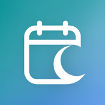
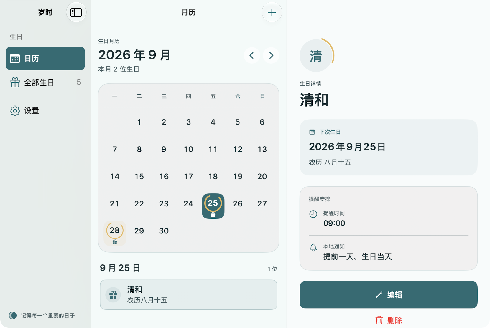

记农历，
也看得懂公历。
正月初一、八月十五、闰月生日，都有自己的位置。下一次公历日期自动换算，打开月历就能看见。

岁时给重要的人，留一个位置
把农历生日交给岁时。清晰的月历、恰好的提醒，
让每一份惦念，都能如期而至。
iPhone 现已可下载 · iPhone 1.1 与 Mac 1.0 新版准备发布
下方展示新版体验，版本供应情况以 App Store 为准。

真实应用界面 · 展示数据均为虚构
正月初一、八月十五、闰月生日，都有自己的位置。下一次公历日期自动换算，打开月历就能看见。
查看、添加、修改和本地提醒都由设备完成。生日先保存到本机，日常使用无需注册应用账号。
新版通过你的 iCloud 私有空间，在同一 Apple ID 的 iPhone 与 Mac 间同步。每台设备都可以独立关闭。
少一点打扰，多一点安心
无广告，无跨应用跟踪。生日资料不上传到开发者服务器；Face ID 或 Touch ID 验证交给系统处理。
新版支持将本机可见生日导出为 JSON。同步是否开启，都不影响本地保存。
了解我们如何保护隐私从记下第一个生日开始。
前往 App Store